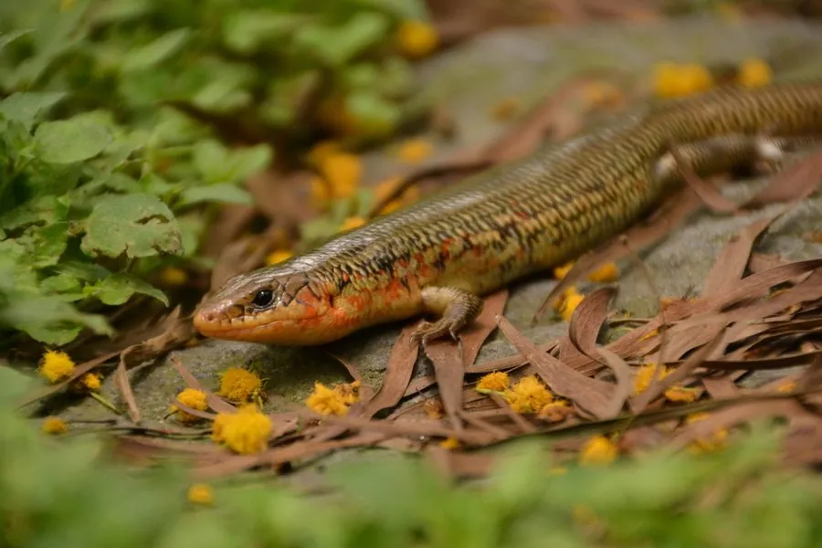

爬行动物 · 动物界
中国石龙子 Plestiodon chinensis

中国常见的蜥蜴，身体光滑、四肢短小，幼体尾巴呈蓝色，遇险时会断尾逃生，是庭院和草丛中的益蜥。
- 分类
- 门脊索动物门纲爬行纲目有鳞目科石龙子科属石龙子属
- 栖息环境
- 草丛、林缘、农田、石堆、灌丛与村舍附近
- 地理分布
- 中国东部、中部和南部多数省区及越南北部
- 保护级别
- IUCN 暂无评估；中国未列入国家重点保护名录
物种志
中国石龙子体长 20–30 厘米，其中尾部较长，身体圆柱形，鳞片光滑发亮，头部呈楔形，四肢短小但灵活，趾端有爪；成体背面呈黄褐、灰褐或橄榄褐色，背侧有浅色纵纹，体侧有深色宽带，腹面淡黄；幼体尾部和身体后段常呈鲜艳的蓝色。
它分布于中国东部、中部和南部，也见于越南北部，栖息于草丛、林缘、农田、石堆和村舍附近，白天活动，捕食昆虫、蜘蛛、蚯蚓和小型蜗牛。每年 4–6 月繁殖，雌蜥产卵 5–9 枚，孵化期约 30–40 天，母蜥有时会守在卵旁。它遇险时会主动断尾，脱落的尾巴还能扭动吸引捕食者注意，之后尾巴可再生。它无毒、对人无害，是庭院里常见的益蜥，目前未被列入国家重点保护名录。
形态与习性
- 食性昆虫、蜘蛛、蚯蚓和小型蜗牛
- 体长20–30 cm（含尾）
- 体重约 10–30 g
- 寿命约 5–8 年
- 繁殖卵生，每窝 5–9 枚，孵化 30–40 天
- 活动节律昼行性，常在石堆和草丛间活动
- 防御遇险时断尾逃生，尾巴可再生
趣味知识
- 中国石龙子幼体的尾巴是鲜艳的蓝色，长大后才逐渐变成褐色。
- 遇险时它会主动断尾，脱落的尾巴仍能扭动，用来吸引捕食者注意。
- 它无毒且捕食害虫，是庭院和农田里常见的益蜥。